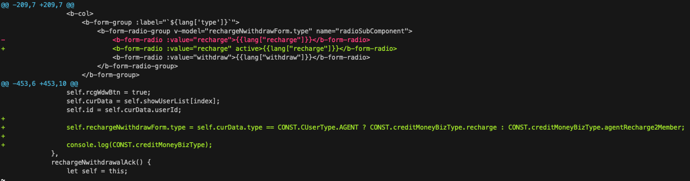

# [Vim] 使用 Vimdiff 來比較 Git diff 的差異
# 簡單設定，讓生活更方便
一般使用 command line 進行 git diff 時，我們通常會看到 diff 將差異使用 + , - 併排處理。

在簡易的 diff 時，這樣其實也算一目了然。然而當兩個檔案差異過大時，這種比對方式，有時候看得其實也是挺痛苦的。
因此，我們可以利用底下少少的設定達到本篇文章進版畫面所顯示的樣子。
# 將 vimdiff 設定成 git 的 diff tool
1
git config — global diff.tool vimdiff
或是可以直接編輯 gitconfig 檔，在裡面加上
1
2[diff]
tool = vimdiff
# 取消開啟 difftool 時的詢問提示
1
git config — global difftool.prompt false
或是可以直接編輯 gitconfig 檔，在裡面加上
1
2[difftool]
prompt = false
# 設定自己喜歡的 alias
1
git config — global alias.d difftool
或是可以直接編輯 gitconfig 檔，在 [alias] 下方加上
1
d = difftool
這樣就設定完成了。
接下來就可以使用 git d <filename> 或 git d # diff all 來進行 git 的比對，並且保留原始的 git diff 。